Trainingsplan 2026-W34
2026-08-17 bis 2026-08-23
Gesamtumfang3:00h plus 2x externer Swim
Swim2x extern
Bike2:15h
Run1:00h
Di 2026-08-18
Mi 2026-08-19
Schwimmen nach externem Plan
- Externen Plan nur locker oder technisch absolvieren, keine harten Intervalle.
- Nur starten bei klarer Symptombesserung und mindestens 24 h ohne Fieber.
- Bei verstärkten Symptomen, Brustbeschwerden, Atemnot oder ungewöhnlicher Müdigkeit sofort beenden.
Do 2026-08-20
Basic Bike
- 10 min @80 W einrollen
- 45 min @100 W fahren
- 5 min @75 W ausrollen
- Nur absolvieren, wenn das Schwimmen am Mittwoch ohne Symptomzunahme vertragen wurde.
Fr 2026-08-21
Long Run
- 60 min @6:00/km laufen.
- Bei zunehmender Erschöpfung, erhöhtem Atemaufwand oder Rückkehr von Infektsymptomen sofort beenden.
Sa 2026-08-22
Schwimmen nach externem Plan
- Externen Plan nur locker oder technisch absolvieren, keine harten Intervalle.
- Bei nicht vollständig abgeklungenen Infektsymptomen die Einheit auslassen.
So 2026-08-23
Basic Bike
- 10 min @80 W einrollen
- 60 min @100 W fahren
- 5 min @75 W ausrollen
- Nur absolvieren, wenn die Einheiten von Mittwoch bis Samstag ohne Rückfall vertragen wurden.
Wochenanalyse
W33 umfasste vier dokumentierte Einheiten mit 2:59 h Gesamtzeit. Der spezifische Anteil bestand aus 1:05 h lockerem Bike, 30 min lockerem Run und zwei Schwimmeinheiten über zusammen 2.754 m. Das Bike blieb mit 107 bpm durchschnittlich klar aerob, eine Leistungs- oder HR-Drift-Bewertung ist wegen fehlender Powermessung nicht möglich. Der Lauf war mit 6:07/km GAP bei 133 bpm nahezu im lockeren Zielbereich und zeigte keine auffällige Herzfrequenzreaktion.
Die Schwimmeinheiten lieferten mit 1.204 m Freiwasser bei 2:21/100 m und 1.550 m im Becken bei 2:16/100 m eine gute sportartspezifische Kontinuität. Das Freiwasserschwimmen konnte keiner einzelnen Intervals.icu-Aktivität eindeutig zugeordnet werden und wurde deshalb nur mit 0,1 TSS erfasst. Die gemessenen 67,1 Wochen-TSS unterschätzen die tatsächliche Gesamtbelastung daher leicht, die Woche bleibt dennoch klar unter dem normalen Belastungsniveau.
Für den 14.-16.08. sind keine Aktivitäten aufgezeichnet. Das geplante Hyrox-Camp fiel nachträglich wegen einer Erkältung aus. Damit war W33 im Ergebnis keine hohe Kraft- oder Zusatzbelastungswoche, sondern eine sehr leichte Woche mit anschließender Erkrankung. Die vor dem Infekt guten Erholungsmarker und der hohe TSB sind keine Grundlage für einen schnellen Wiedereinstieg, weil aktuelle Symptome bei der Trainingssteuerung Vorrang haben.
Für W34 werden Montag und Dienstag auf ausdrücklichen Wunsch trainingsfrei gehalten, danach folgt ein gestufter, ausschließlich aerober Wiedereinstieg mit zwei externen Schwimmeinheiten, lockerem Bike am Donnerstag, einem kontrollierten Long Run am Freitag und lockerem Bike am Sonntag. Die Woche enthält keine Intervalle, weil der Triathlon am 05.09. zwar in 19 Tagen ansteht, die Folgen einer zu frühen Intensivierung während eines Infekts aber das größere Risiko darstellen. Die Einheiten am Mittwoch bis Sonntag gelten nur bei klarer Symptombesserung und mindestens 24 Stunden ohne Fieber; bei Rückfall oder Symptomen aus Brust, Kreislauf oder ausgeprägter Müdigkeit ist die jeweilige Einheit zu streichen. Die dokumentierte sehr leichte W33, die unauffällige HRV und die gute Schlafdauer stützen einen vorsichtigen Wiedereinstieg, ersetzen aber keine Symptomfreiheit. Die beiden Schwimmeinheiten erhalten die race-spezifische Wasserlage, während Bike und Run die Triathlonbewegungen ohne zusätzliche intensive Last pflegen.
Trends
Performance (12 Monate)
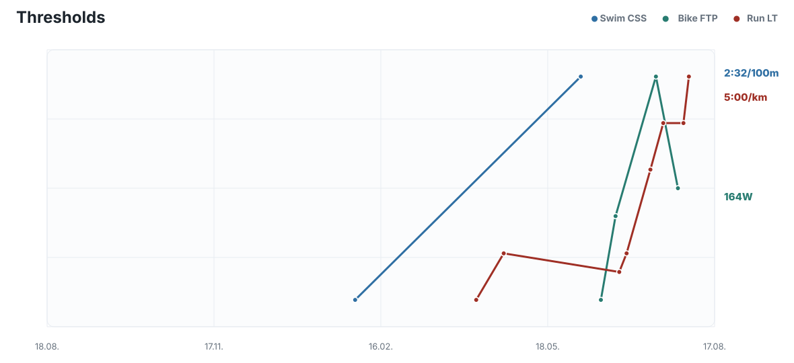
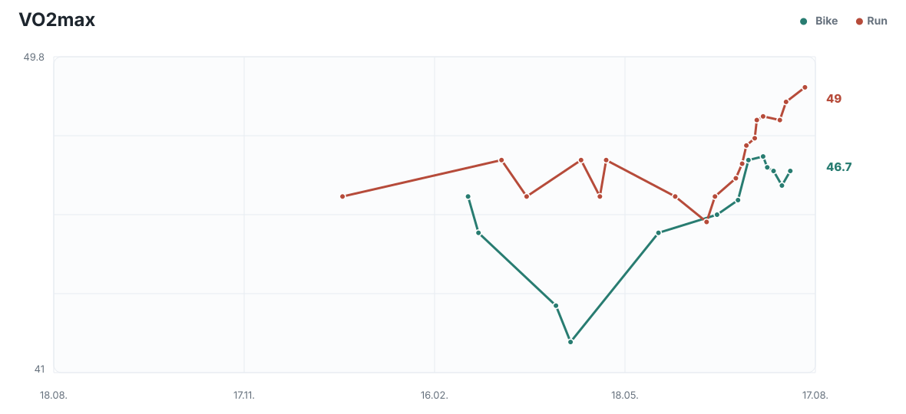
Belastung (90 Tage)
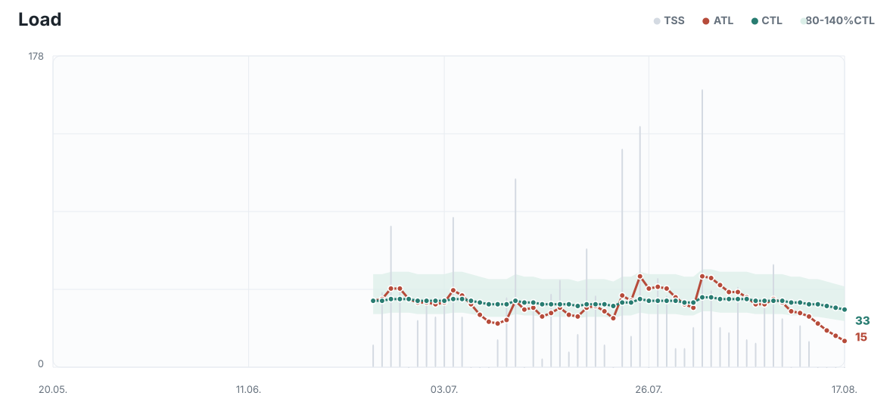
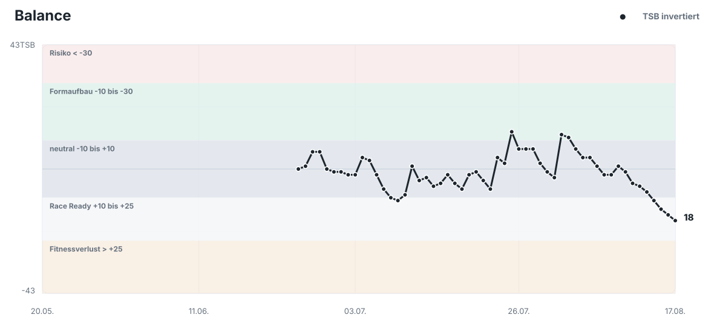
Effizienz (90 Tage)
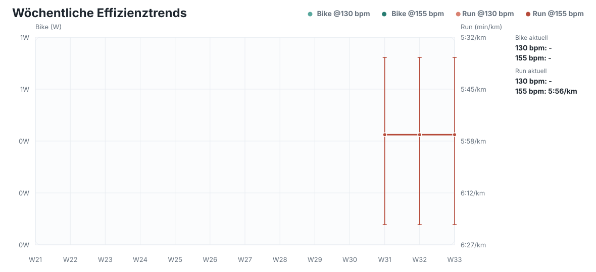
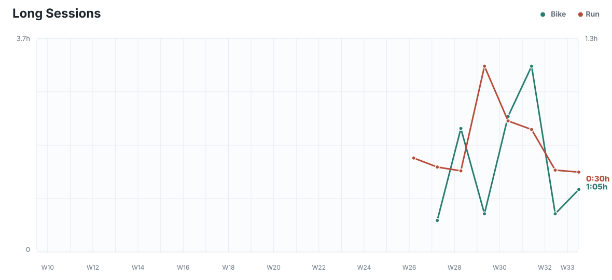

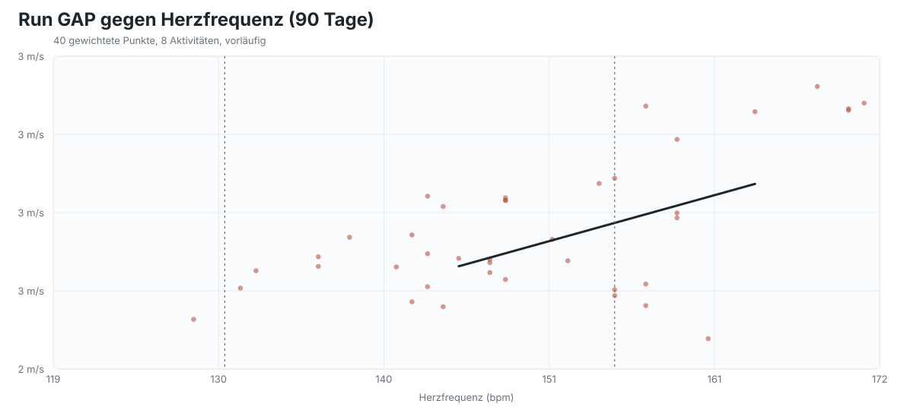
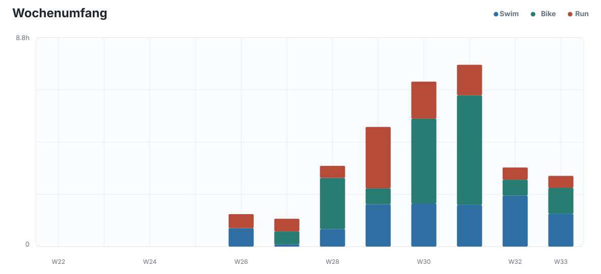
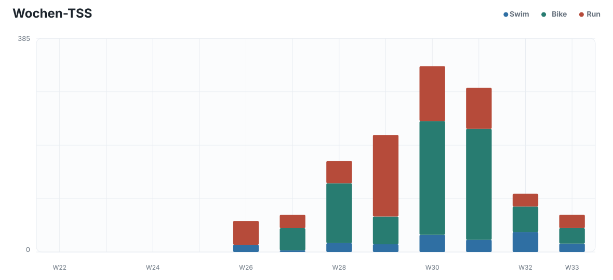
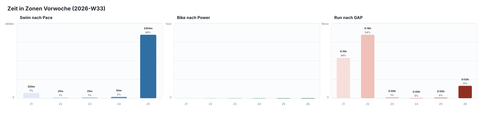
Readiness (90 Tage)
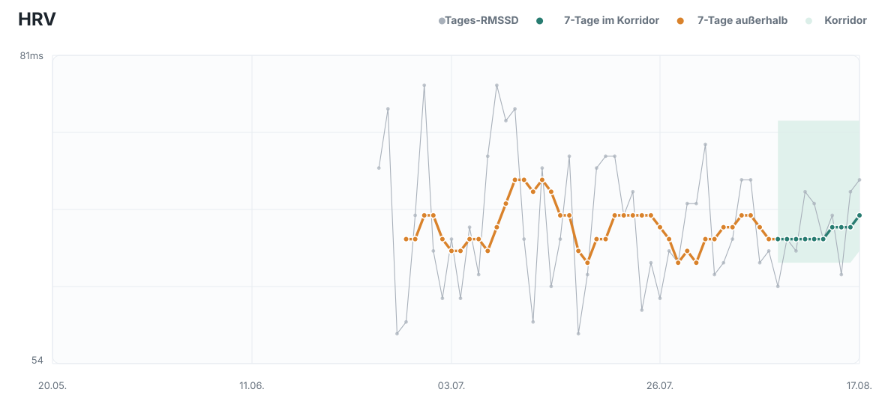
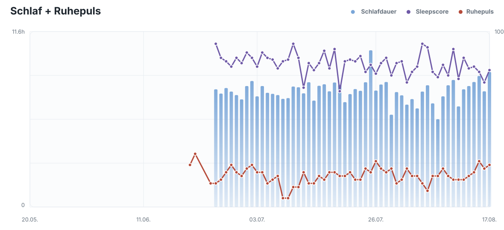
Alltag (90 Tage)
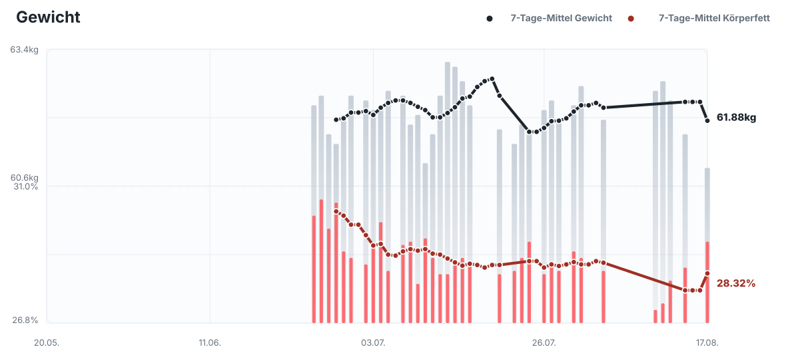
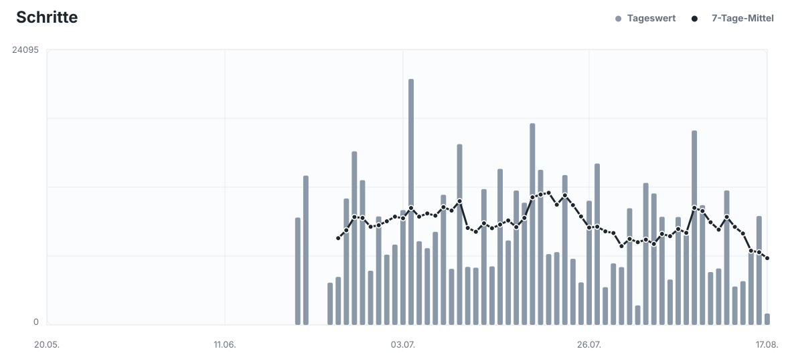